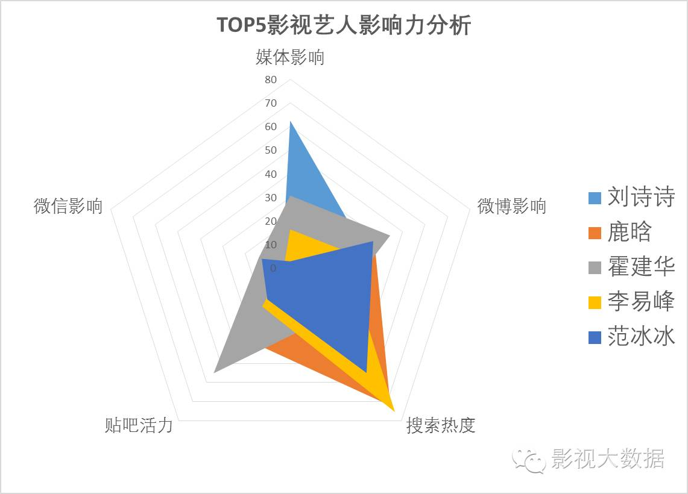
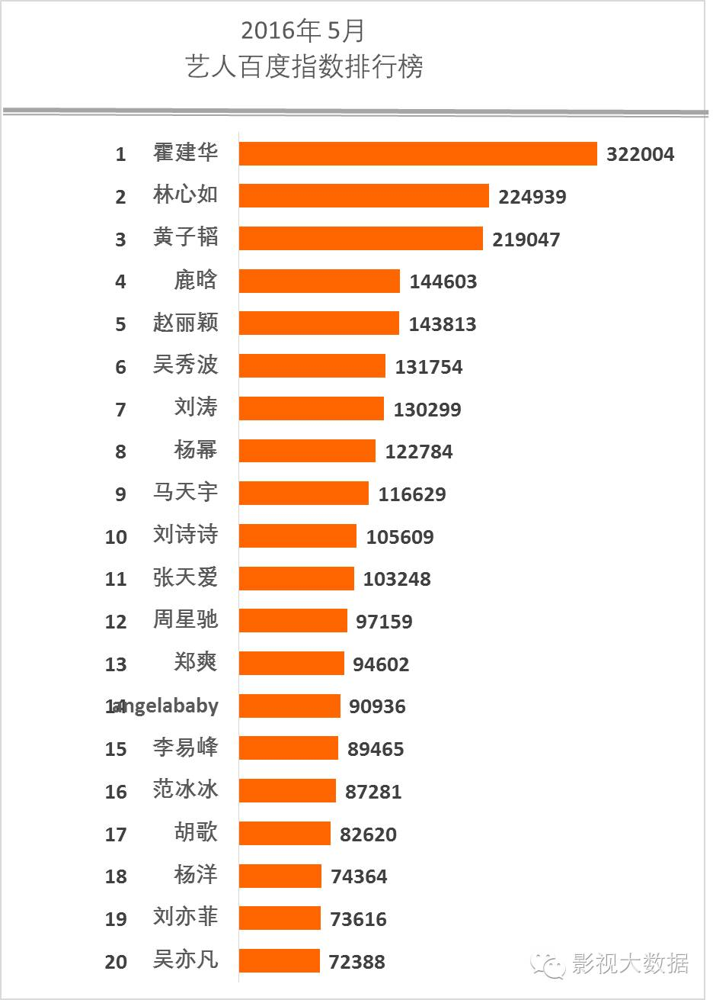
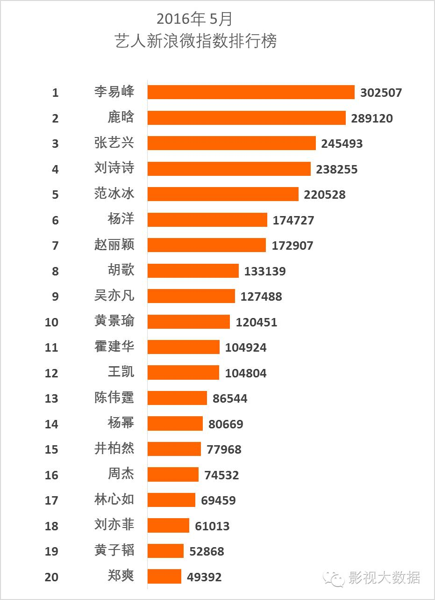
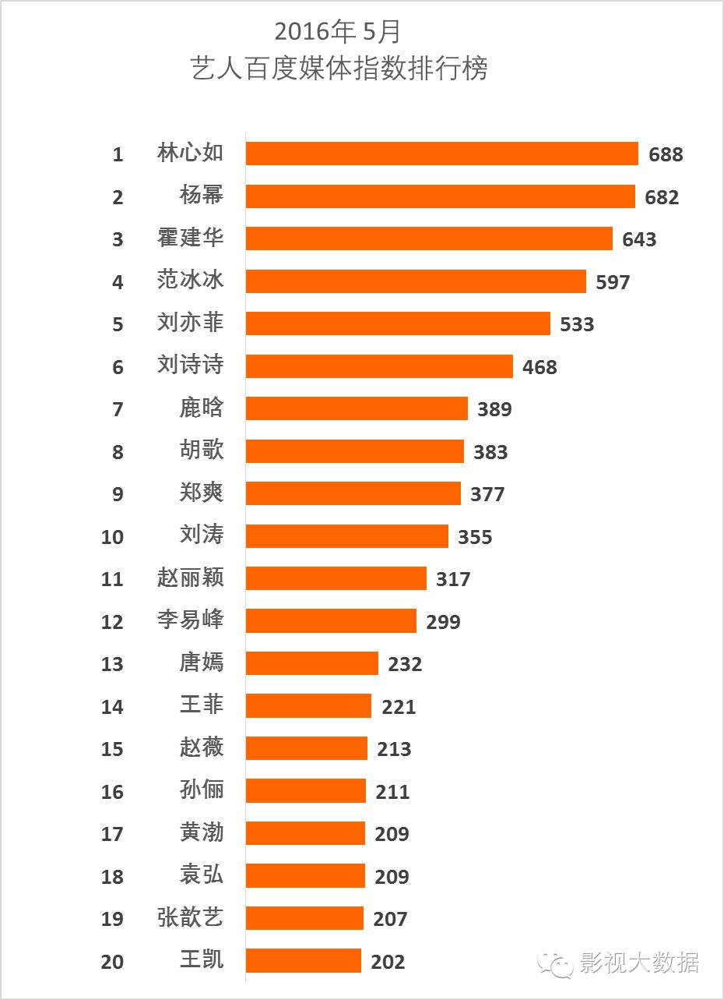
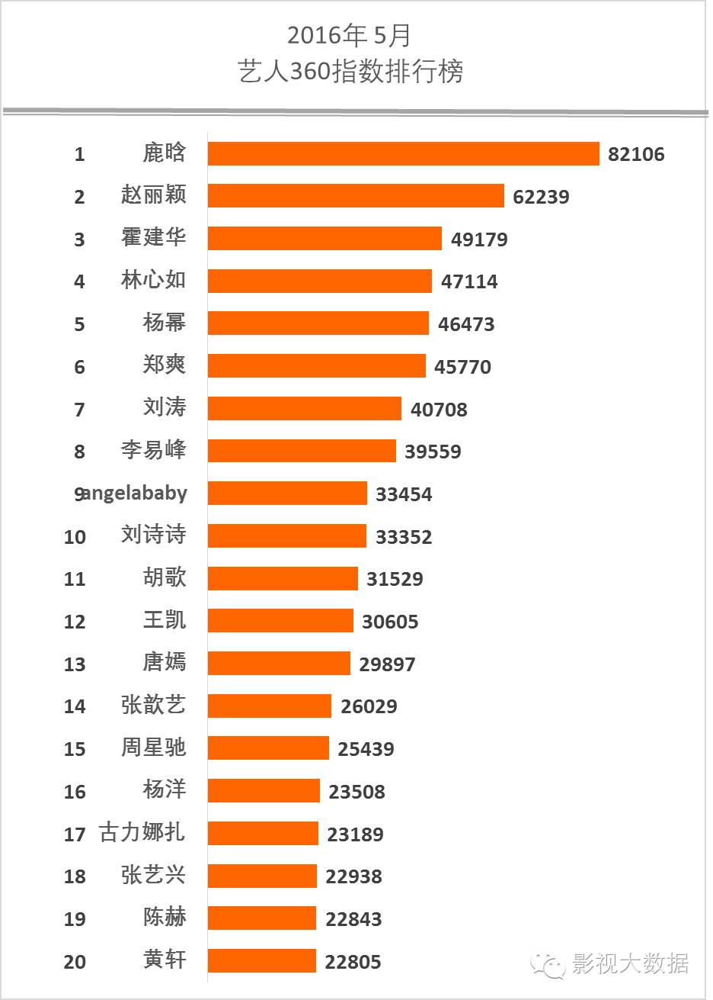

数据|DataWin5月华人艺人综合影响力排行榜
在网络影响力排行榜前几位常年由男艺人霸占的“网络她世纪”，刘诗诗本月一跃登顶可说是十分难得。究其原因，是百度贴吧指数的一枝独秀。
本月综合影响力排名第四位的李易峰，则稍微喜忧参半。上半月李易峰生日因为见面会购票出现问题，而给粉丝退款，这一负责任的形象刚刚刷高了粉丝好感度，却不料紧接着下半月发生了车祸事件。这一事件给李易峰带来了一些大众向的搜索热度。另外李易峰各维度数据中最突出的是排行第一的微博热度，这大约也与车祸的团队和粉丝共同公关有关。而李易峰的微信影响力即使在有车祸热点发生时，也仅排名第20位，作为一个“网红”恐怕也值得团队警惕。
下图为5月网络影响力前五位的艺人各维度数据比较图表。

TOP6：赵丽颖
赵丽颖本月前进4名到达第六位，同样值得恭喜，赵丽颖和霍建华一样，也是一位各维度数据都比较均衡发展的艺人，无论微信、新浪微指数、大众、媒体搜索方面都能进入前十，连百度贴吧也榜上有名，这说明她近段时间在大众认知和粉丝讨论上都不低，而主要凭借的则是其连续曝光的作品，一是即将上档的《胭脂》、《老九门》、《诛仙青云志》等，一是正在拍摄的关注度较高的《特工皇妃楚乔传》，赵丽颖可说是小花中的劳模，最近又换了新团队，发展势头欣欣向荣。
TOP7：张艺兴
张艺兴本月排名稳定于第七位。《极限挑战》的热播让这位小鲜肉收益极大，与“极限男人帮”中孙红雷合作的电视剧《好先生》也在月末开始热播，《老九门》亦将在不久后上档。但张艺兴的排名仅新浪微指数排名第三较突出，百度大众搜索和媒体搜索都几乎榜上无名，微信亦然，可见其热度也许过于依赖粉丝，需加强新闻发布和大众认知。
TOP8: 林心如
林心如本月凭借“霍如恋”一跃前进23位上榜，综合排名第八位，其中微信排名第一位甚至比起新出炉的恋人霍建华还要高出一名，百度、360等大众搜索方面排名也很优越，足见林心如有很高的国民认知基础，并且凭借恋情公布又再次唤醒了大众记忆，具有值得开发的商业价值。
TOP9：杨幂
杨幂本月综合排名第九位，比上月提高2名，各维度指数方面属微信指数、媒体指数方面较突出，贴吧活跃度也不错，其团队大约比较注重对其形象的塑造和维护，粉丝也具有一定的活跃度。最近和黄轩合作的《翻译官》收视率不错，有望六月讨论度继续维持。
TOP10：胡歌
胡歌本月排名下降5名来到第十位，这属于随着《琅琊榜》、《伪装者》等热播热议剧过去的正常回调。胡歌本月各维度指数都较为平均，微信排名、百度搜索稍显突出，也意味着胡歌依然维持着一定的潜力，等到下一波热议事件来临依然会回升。
TOP12：吴亦凡本月下降3名来到第十二位。这应该还是这位人气小生第一次网络影响力跌出前十。和杨洋的状况相似，吴亦凡本月除了新浪微指数，其它维度指标都有些落后，虽然这和这位小生近几个月都在国外拍摄《极限特工3》、没有在国内宣传造势、没有新戏上档有关，但未尝不是一个小小的警钟，团队应注意维持一定热度。不过接下来吴亦凡的新电影《致青春2：原来你还在这里》、《夏有乔木雅望天堂》、《爵迹》等预计会在七八九月相继上档，听说还有新资源要公布，届时热度应该会有所回复。



